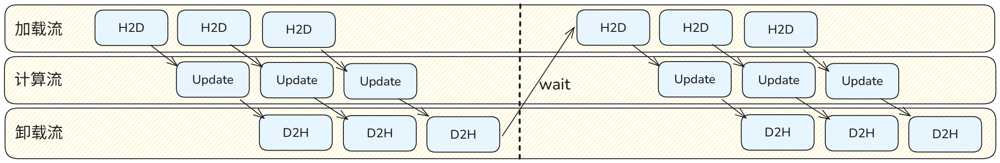

SwapOptimizer 特性
在分布式训练任务中，随着模型参数量的剧增，除了模型权重和激活值，优化器状态（如 Adam/AdamW 的动量和方差）通常会占用极大的显存空间。现有的常规训练方案在处理优化器状态时暴露出以下局限性： 1. 优化器状态在整个前向和反向传播过程中静态驻留在设备显存中，但实际上仅在最后的参数更新阶段才会被使用，造成了计算过程中的显存严重浪费。 2. 传统的单纯卸载（Offload）方案通常会引入巨大的 CPU 与加速卡之间的传输延迟，阻塞主计算流，导致训练吞吐量大幅下降。
实现原理
参考MindSpeed框架设计的SwapOptimizer特性，我们在 torchtitan 框架的优化器构建逻辑中引入了自定义的 SwapOptimizersContainer，对原生的 Adam 和 AdamW 优化器的 step 方法进行了无缝拦截与替换，从而使能了优化器状态的动态显存管理。相关代码定义在 torchtitan_npu/patches/optimizer/swap_optimizer.py。
当前配置路由统一到 NPU OptimizerConfig：
- 模型的
config_registry.py只使用torchtitan_npu.config.configs.OptimizerConfig描述优化器参数。 torchtitan_npu/config/configs.py只承载参数定义，不维护 swap optimizer 的分支构建逻辑。SwapOptimizersContainer.Config.build()负责唯一的 swap 开关路由：swap_optimizer=True时构造SwapOptimizersContainer，swap_optimizer=False时回退到上游基础OptimizersContainer。- NPU
OptimizerConfig.build()由 swap optimizer patch 层适配，转换为SwapOptimizersContainer.Config.build()复用同一套路由逻辑。
本特性主要遵循“按块加载 -> 异步更新 -> 及时卸载”的流水线机制，在确保训练精度的前提下，用多流通算重叠换取巨大的显存空间收益。具体拆解如下：
状态初始化与零显存占位
在初始化阶段，系统会在host内存中为每个参数分配固定内存（pin_memory=True）以存放一阶动量 exp_avg、二阶动量 exp_avg_sq 等状态。而在device端，通过底层接口 untyped_storage().resize_(0) 巧妙地将这些状态的底层物理显存清空，仅保留 Tensor 的元数据。这使得在耗时较长的前向和反向传播期间，优化器状态完全不占用宝贵的设备显存。
异步多流通信与流水线更新
重写后的 swap_optimizer_step 引入了两个独立的底层数据流 swap_to_device_stream 和 swap_to_host_stream，并且将整个参数更新过程切分为多个小块（通过 swap_optimizer_times 控制单次处理的容量阈值 swap_numel）以实现高效的流水线更新：

- Load（加载）：在设备流中异步将下一块所需参数的优化器状态从 CPU 拷贝到 Device，并恢复其显存大小。
- Update（更新）：主计算流通过事件（Event）阻塞等待状态加载完成，随后立即调用底层 Fused 算子进行参数更新。
- Offload（卸载）：更新完成后，记录事件，并在主机流中将更新后的最新状态异步写回 CPU，同时再次清空设备侧显存以复用给下一个参数块。
配置选项
Swap Optimizer 配置在模型的 config_registry.py 中，统一使用
torchtitan_npu.config.configs.OptimizerConfig。
| 配置项 | 类型 | 默认值 | 说明 |
|---|---|---|---|
name |
str | "AdamW" | 使用的优化器类型。当前 Swap 特性拦截并支持 Adam 和 AdamW。 |
swap_optimizer |
bool | false | 是否启用 Swap Optimizer 特性以进行显存流水线卸载。为 false 时使用上游基础 optimizer container。 |
swap_optimizer_times |
int | 16 | 切片划分次数。用于决定优化器参数卸载与加载时的分块大小。值越大，单次峰值显存占用越小，但可能增加系统的流调度开销。 |
配置示例
在 torchtitan_npu/models/<model>/config_registry.py 的配置函数中设置：
from torchtitan_npu.config.configs import OptimizerConfig
optimizer = OptimizerConfig(
name="AdamW",
lr=3e-4,
weight_decay=0.01,
swap_optimizer=True,
swap_optimizer_times=16,
)
关闭 Swap Optimizer 时，可以省略 swap_optimizer，或显式设置为 False。
此时构建流程会回退到上游基础 OptimizersContainer，不会构造
SwapOptimizersContainer：
optimizer = OptimizerConfig(
name="AdamW",
lr=3e-4,
weight_decay=0.01,
swap_optimizer=False,
)
启动时也可以通过命令行覆盖同名字段：
bash scripts/run_train.sh \
--optimizer.swap_optimizer \
--optimizer.swap_optimizer_times 16